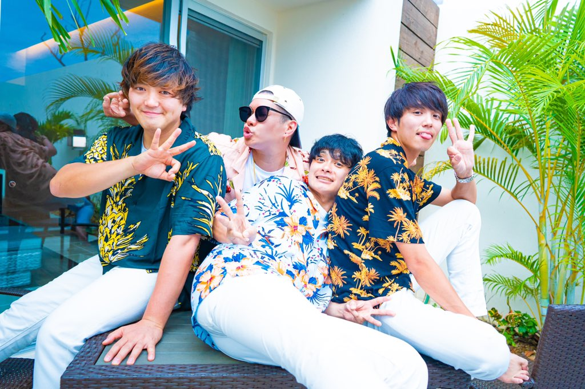

ABOUT US
『関西を中心に全国で活躍するエンターテイメントグループ「CLOWN’S CROWN」（クラウンズクラウン）』
キャッチーなアップテンポ曲と、なぜか聴き入ってしまうメロディーのバラード曲に加え、関西人ならではの喋りでライブ全体を１つにするMC。一度観てしまうとついついハマってしまうグループ。子供から大人まで幅広い年齢層に支持されていて、最近では家族全員で応援しているとの声も多く聞こえる。
過去に「なんばHatch」や「BIGCAT」と大阪の１０００人クラスのライブハウスでのワンマンライブを完売させてきた。２０２１年埼玉で初の野外ワンマンライブを開催。現在では大阪だけではなく北海道から九州まで全国へと活動の幅を広げている。
キャッチーなアップテンポ曲と、なぜか聴き入ってしまうメロディーのバラード曲に加え、関西人ならではの喋りでライブ全体を１つにするMC。一度観てしまうとついついハマってしまうグループ。子供から大人まで幅広い年齢層に支持されていて、最近では家族全員で応援しているとの声も多く聞こえる。
過去に「なんばHatch」や「BIGCAT」と大阪の１０００人クラスのライブハウスでのワンマンライブを完売させてきた。２０２１年埼玉で初の野外ワンマンライブを開催。現在では大阪だけではなく北海道から九州まで全国へと活動の幅を広げている。